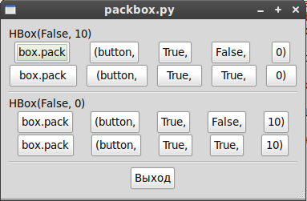

Большинство компоновок делается с помощью коробок. Коробка это невидимый виджет, в который мы можем разместить наши виджеты, который имеет две формы: horizontal box, и vertical box. Когда мы размещаем виджеты в горизонтальной коробке, они вставляются горизонтально, слева направо или справа налево, в зависимости от используемого вызова. В вертикальной коробке виджеты размещаются сверху вниз или снизу вверх. Вы можете использовать любые комбинации коробок, вкладывать одну или несколько коробок внутрь другой коробки для достижения желаемого эффекта.
Для того чтобы создать горизонтальную коробку используется вызов gtk.HBox(), а для вертикальных коробок gtk.VBox(). Методы pack_start() и pack_end() используются для размещения объектов внутрь этих контейнеров. Метод pack_start() будет начинать сверху и продвигаться вниз в VBox, или слева направо в HBox. Метод pack_end() будет наоборот, размещать снизу вверх в VBox, либо справа налево в HBox. Используя эти методы мы можем размещать виджеты с любой стороны, и смешивать эти методы для достижения желаемого эффекта. В большинстве примеров мы будем использовать pack_start(). Объект, помещаемый внутрь коробки, может быть быть либо другим контейнером, либо конкретным виджетом. По сути, большинство виджетов тоже являются контейнерами и содержат сами себя, например, кнопка (но обычно используется только метка, находящуюся внутри кнопки).
Используя эти вызовы, вы даёте GTK знать о том, где вы хотите разместить ваши виджеты, позволить ли им делать автоматическое изменение размера, либо какие-то другие модные действия. Также присутствует набор настроек для подстройки размещения виджетов. Как вы теперь можете представить, этот метод даёт весьма много гибкости в размещении и создании виджетов.
Из-за своей гибкости, размещающие коробки GTK поначалу могут сбивать с толку. В них много настроек, и не сразу очевидно как они работают совместно. В конце концов, однако, выделяется 5 разных стилей. Рисунок 4.1, “5 стилей размещения” показывает результат запуска программы packbox.py с аргументом 1:
Рисунок 4.1. 5 стилей размещения
Каждая строка содержит одну горизонтальную коробку (HBox) с несколькими кнопками. Короткий размещающий вызов используется для каждой из кнопок в HBox. Все кнопки размещены в HBox одинаковым образом (т.е. с такими-же аргументами к методу pack_start())
Это пример метода pack_start().
|
box.pack_start(child, expand, fill, padding) |
box это коробка в которой вы размещаете объекты; первый аргумент это упаковываемый объект child. Сейчас всеми объектами будут кнопки. Итак, размещаем кнопки в коробки.
Аргумент expand для методов pack_start() и pack_end() указывает на то, будут ли виджеты пытаться занять всё доступное место в коробке (при этом коробка будет расширяться до максимально возможного размера исходя из отведённого для неё места (True)), либо коробка будет сжиматься для минимального размера достаточного для виджетов (False). Выбор Falseпозволит делать для ваших виджетов выравнивание по левому или по правому краю. В противном случае они будут занимать всю ширину коробки, и подобный эффект будет достигнут при использовании только одного pack_start() или pack_end().
Аргумент fill определяет будет ли дополнительное пространство выделяться для самих объектов (True), или для пространства вокруг них (False). Он имеет смысл только если аргумент expand равен True.
Python позволяет методам или функциям определяться со стандартными значениями аргументов и ключевыми словами. В этом учебнике показаны определения функций и методов со стандартными значениями и выделенными ключевыми словами. Например, метод pack_start() определяется как:
|
box.pack_start(child, expand=True, fill=True, padding=0) box.pack_end(child, expand=True, fill=True, padding=0) |
child, expand, fill и padding это ключевые слова. expand, fill и padding имеют стандартные значения. Аргумент child должен быть обязательно указан.
Для создания новой коробки, функция выглядит примерно так:
|
hbox = gtk.HBox(homogeneous=False, spacing=0) vbox = gtk.VBox(homogeneous=False, spacing=0) |
Аргумент homogeneous для виджетов gtk.HBox() и gtk.VBox() управляет тем, будут ли объекты в коробке иметь одинаковый размер (т.е. одинаковую ширину в HBox или высоту в VBox). Если он включён, то всегда включён аргумент expand.
Какая же разница между spacing (устанавливается при создании коробки) и padding(устанавливается при размещении элементов)? Spacing добавляется между объектами, а padding добавляется со всех сторон объекта. Рисунок 4.2, “Размещение с использованием spacing и padding” показывает разницу. Передайте программе packbox.py аргумент 2:
Рисунок 4.2. “Размещение с использованием spacing и padding”

Рисунок 4.3, “Размещение с использованием pack_end()” показывает использование метода pack_end() (передайте аргумент 3 программе packbox.py). Метка “end” размещена с использованием метода pack_end(). Даже после изменения размеров окна она останется возле правой границы.
Рисунок 4.3. Размещение с использованием pack_end()